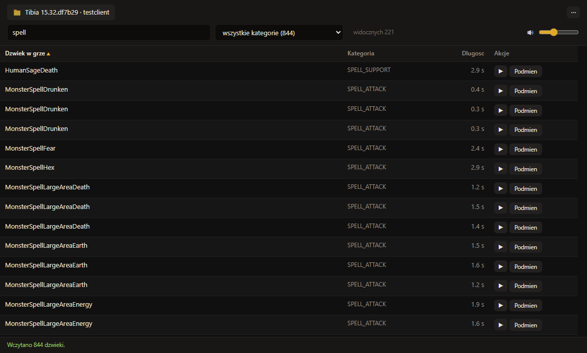
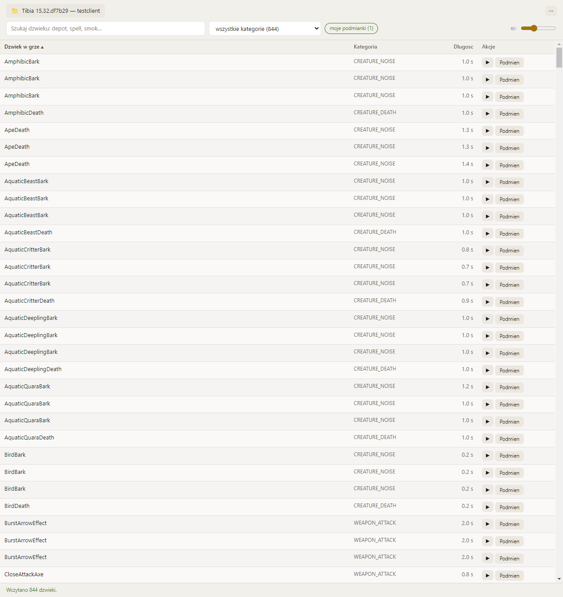
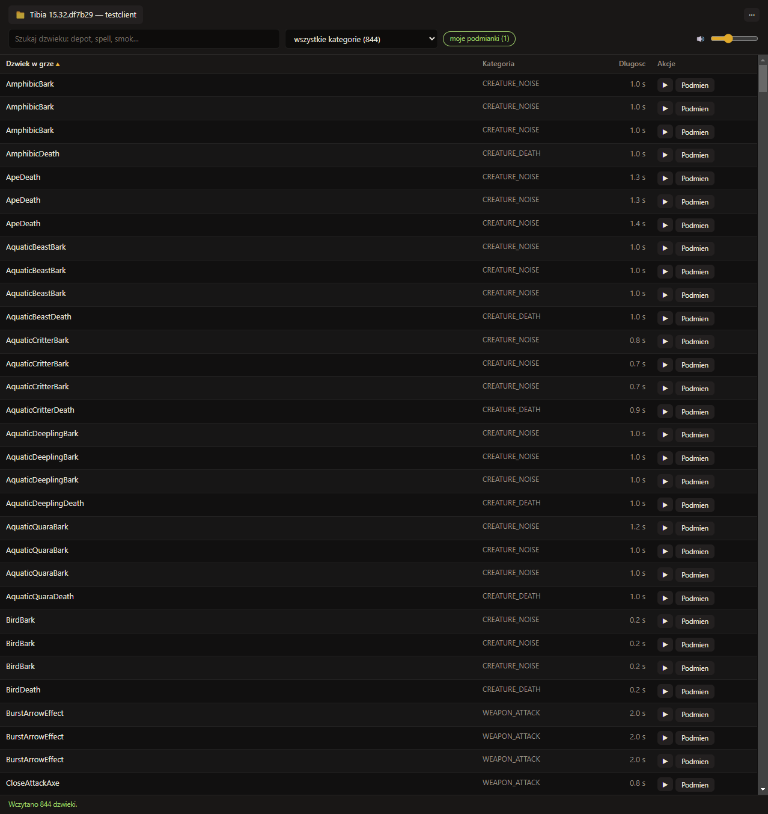
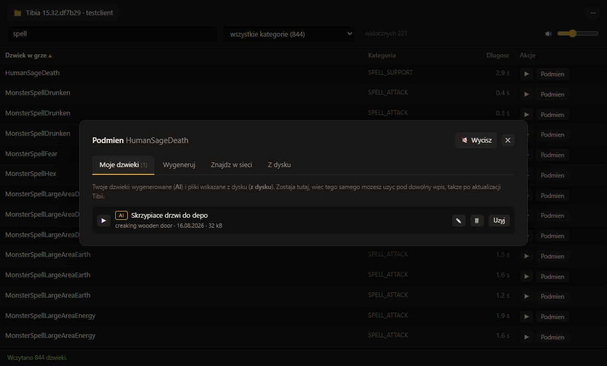

Around 844 sound files, every one of them carrying the in-game action it belongs to, so you know what you are actually changing.
Preview, replace, mute, restore. A backup is taken before the first change.

Latest release: checking…
Shortcuts on the desktop and in the Start menu, and the place the app updates itself into. It installs for your own account, so it never asks for an administrator password.
Download installerA single executable, no installation, runs from a USB stick. The portable build does not update itself; it points you at the release page instead.
Download portable
The same unpacked application in an archive, for when your browser makes
downloading an .exe difficult.
The application interface is in Polish; the documentation is in English. Replacing and muting also need ffmpeg, which is free; browsing and previewing work without it.
The files are not signed with a publisher certificate, so Windows shows “Windows protected your PC”. Choose “More info”, then “Run anyway”.
A readable name for every sound, four ways to find a replacement, and a library that keeps what you have already used.
Around 844 files listed with their in-game action, category and length. Search by name, category or id, and the counters above the list double as filters.
Play any sound straight from the list, without launching the game. A dot next to the name marks the ones that are no longer original.
Bring your own mp3, wav, flac or m4a, or drag it onto a row. Every file is re-encoded to the original's sample rate and channel count, so the engine gets exactly what it expects.
Type “big explosion”, listen to the results, replace. The built-in sources return CC0 licensed files only.
“Deep dragon roar with echo”, turned into a sound. Optional, needs your own API key and is off until you set one.
Mute all the music, or keep only the combat sounds, in one click. Your own layouts are saved under a name and reapplied whenever you want.
A light and a dark theme, and the replacement window with its four sources.



A purely cosmetic change: you hear something else and the game behaves exactly the same.
It replaces selected .ogg files in your own installation.
It does not touch the client executable, the .dat files
or the asset catalogs, injects no code, hooks no process and reads no
memory, so it gives no advantage over other players.
The original is backed up before the first replacement, and one button restores it; file verification in the Tibia launcher does the same. A Tibia update restores the originals by itself, and the app notices and offers to reapply yours.
No telemetry, no account, nothing collected. It reaches the network only when you search for a sound, generate one, or check for updates, and the once-a-day check stays off until you turn it on.